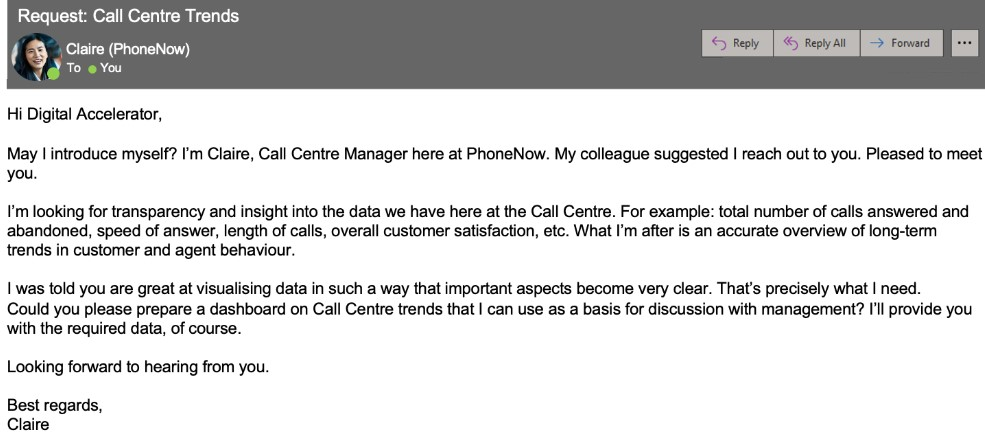

PowerBI Skill:
The company's internal data cannot be demonstrated. I will use a PWC virtual project to demonstrate Powerbi visual data skills. Here is a call center task.
Background information:
Dashboard for the call center manager to understand trends.
"The digital revolution and our fast-changing world requires a skills revolution. And it’s not just about the digital skills. The skills revolution is about helping people build their digital awareness, emotional intelligence and creativity to fully participate in the digital future workplace — and it needs to start now.
At PwC, we are working with other organisations across the world, building on our work with clients and on upskilling our 276,000 people. Still, more must be done if we are to ensure everyone has the opportunity to learn, work and participate in the digital world. This is at the heart of our purpose.
We are enabling employees who are motivated to further accelerate their skills to do so by offering them a “career pivot” to become what we call “Digital Accelerators”. Accelerators rapidly deepen their skills in digital specialties, such as data, automation, AI, and digital storytelling by learning a variety of self-service tools and coding languages and applying these skills across our business.
We're happy you joined us, welcome to the team! Giulia is your manager and helps you through your upskilling journey in PowerBI - your step to become a true data jedi and Digital Accelerator. But wait no more, word spreads fast and an important client reached out to you to help him visualising their data. "
Task :
Create a dashboard in Power BI for Claire that reflects all relevant Key Performance Indicators (KPIs) and metrics in the dataset. Get creative!

KPIs include: Total numbers of calls answered and abandoned, speed of answer, length of calls overall cx satisfaction, etc.
I displayed metrics as follow:
Overall customer satisfaction
Overall calls answered/abandoned
Calls by time
Average speed of answer
Agent’s performance quadrant -> average handle time (talk duration) vs calls answered